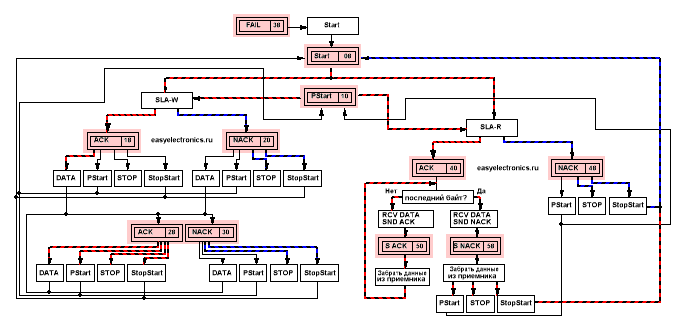
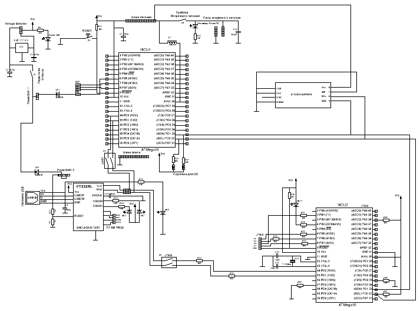
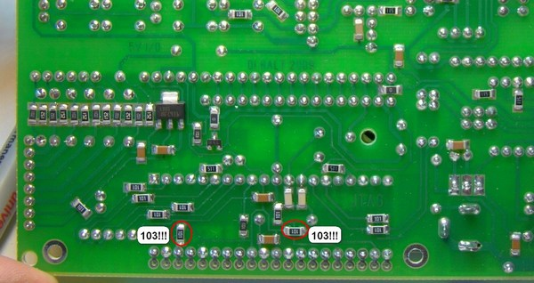
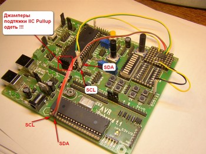
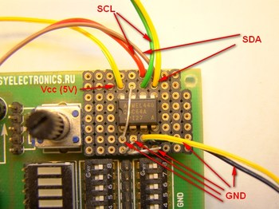

Про шину IIC я писал уже неоднократно. Вначале было описание протокола, потом пример работы в лоб, а недавно камрад Ultrin выложил пример работы с i2c на базе блока USI. Да и в интернете полно статей по использованию этой шины в своих целях. Одно плохо — все они какие то однобокие. В подавляющем большинстве случаев используется конфигурация «Контроллер-Master & EEPROM-Slave». Да еще и на программном мастере. И ни разу я не встречал материала, чтобы кто то сделал Контроллер-Slave или описал многомастерную систему, когда несколько контроллеров сидят на шине и решают арбитражем конфликты передачи. Пустоту пора заполнять, решил я и завязал узелок на память… Да только веревочку пролюбил :)
Обещаного три года ждут, вот я таки пересилил лень, выкроил время и сообразил полноценную библиотеку для работы с аппаратным модулем TWI, встроенным во все контроллеры серии MegaAVR. Давно грозился.
Кошмар на крыльях ночи
Во-первых, я сразу же отказался от концепции тупого последовательного
кода. Когда у нас есть некоторая функция SendByte(Address,Byte) которая
шлет данные по шине, а потом возвращает 1 или 0 в зависимости от
успешности или неуспешности операции. Метод прост, дубов, но медленный.
Т.е. пока мы байт не пошлем мы не узнаем ушло ли оно, а значит будем
вынуждены тупить и ждать. Да, шина i2c может быть очень быстрой. До
100кбит ЕМНИП, но даже это время, а я все же за высокоскоростное
выполнение кода, без тормозных выдержек. Наш выбор — диспетчеризация и
работа на прерываниях.
Суть в том, что мы подготавливаем данные которые нужно отослать.
Дальше запускаем аппаратуру передачи и возвращаемся к своим делам. А
зверский конечный автомат, что висит на прерывании TWI передатчика сам
передает данные, отвлекая основную программу только тогда, когда нужен
какой-либо экшн (например сунуть очередной байт в буфер передачи). Когда
же все будет передано, то он генерит событие, которое оповещает
головную программу, что мол задание выполнено.
Как? Ну это уже от конкретной реализации событий программы зависит.
Может флажок выставить или байт состояния конечного автомата подправить,
а может и задачу на конвейер диспетчера набросить или Event в почтовый
ящик задачи скинуть. Если юзается RTOS.
Что у нас есть?
А у TWI всего один вектор прерываний (в отличии от USART, где на каждое
событие по прерыванию). Впрочем, это не страшно. Т.к. к нему в нагрузку
идет регистр TWSR в котором записывается код причины по которой мы
оказались в прерывании. Т.е. у нас, без лишних проблем, образуется
конечный автомат.
Вот перечень кодов выдаваемых этим регистром
Коды состояний для режима Master
- 0×00 Bus Fail Автобус сломался… эээ в смысле аппаратная ошибка шины. Например, внезапный старт посреди передачи бита.
- 0×08 Start Был сделан старт. Теперь мы решаем что делать дальше, например послать адрес ведомого
- 0×10 ReStart Был обнаружен повторный старт. Можно переключиться с записи на чтение или наоборот. От логики зависит.
- 0×18 SLA+W+ACK Мы отправили адрес с битом записи, а в ответ получили ACK от ведомого. Значит можно продолжать.
- 0×20 SLA+W+NACK Мы отправили адрес с битом записи, а нас послали NACK. Обидно, сгенерим ошибку или повторим еще раз.
- 0×28 Byte+ACK Мы послали байт и получили подтверждение, что ведомый его принял. Продолжаем.
- 0×30 Byte+NACK Мы послали байт, но подтверждение не
получили. Видимо ведомый уже сыт по горло нашими подачками или он
захлебнулся в данных. Либо его ВНЕЗАПНО посреди передачи данных украли
инопланетяне.
- 0×38 Collision А у нас тут клановые разборки — пришел
другой мастер, по хамски нас перебил, да так, что мы от возмущения аж
заткнулись. Ничего I’l be back! До встречи через n тактов!
- 0×40 SLA+R+ACK Послали адрес с битом на чтение, а ведомый отозвался. Хорошо! Будем читать.
- 0×48 SLA+R+NACK Крикнули в шину «Эй ты, с адресом ХХХ,
почитай нам сказки» А в ответ «Иди NACK!» В смысле на запрос адреса с
битом чтения никто не откликнулся. Видимо не хотят или заняты. Также
может быть никого нет дома.
- 0×50 Receive Byte Мы приняли байт. И думаем что бы ответить ведомому. ACK или NACK.
- 0×58 Receive Byte+NACK Мы приняли байт от ведомого и сказали ему «иди NACK!» И он обиженый ушел, освободив шину.
Коды состояний для режима Slave:
- 0×68 Receive SLA+W LP Мы были мастером, трепались с
подчиненными по шине. И тут появляется на шине другой, более равный,
мастер, перебивает нас и молвит «Уважаемый ХХ, а не возьмете ли вы вот
эти байтики…» Чтож, он круче. Придется бросать передачу и брать его
байты себе.
- 0×78 Receive SLA+W LP Broadcast Были мы, как нам
казалось, самыми крутыми мастерами на шине. Пока не появился другой
мастер и перебив нас прогундосил на всю шину «Эй, слышь тыыы. Слушай
сюда» Девайсы-лохи, с неотключенными широковещательными запросами
подчиняются. Остальные отмораживаются и всякое Broadcast-быдло
игнорируют.
- 0×60 Receive SLA+W Сидим на шине, никого не трогаем, ни с кем не общаемся. А тут нас по имени… Конечно отзовемся :)
- 0×70 Receive SLA+W Broadcast Ситуация повторяется, но на
этот раз слышим уже знакомое нам «Слышь, тыыыы». Кто? К кому?
Игнорируем Broadcast запросы? Или нет? Зависит от моральных качеств
программы.
- 0×80 Receive Byte & 0×90 Receive Byte Broadcast
Принимаем байты. От кого и в каком виде не важно. Решаем что сказать
Давай еще (ACK) или «Иди NACK». Тут уже по обстоятельствам.
- 0×88 Receive Last Byte & 0×98 Receive Last Byte Broadcast Приняли последний байт и распихиваем по карманам.
- 0xA0 Receive ReStart Ой у нас Повторный старт. Видимо то что пришло в первый раз был таки адрес страницы. А сейчас пойдут данные…
- 0xB0 Receive SLA+R LP Слали мы что то слали, а тут нас
перебивает другой мастер, обращается по имени и говорит «А ну ХХ зачитай
нам что нибудь из Пушкина» Что делать, приходится читать.
- 0xA8 Receive SLA+R Либо просто к нам какой то другой мастер по имени обращается и просить ему передать байтиков.
- 0xB8 Send Byte Receive ACK Ну дали мы ему байт. Он нам
ACK. А мы тем временем думаем слать ему еще один (последний) и говорить
«иди NACK». Или же у нас дофига их и можно еще пообщаться.
- 0xC0 Send Last Byte Receive NACK Дали мастеру последний имеющийся байт, а он нам «иди NACK». Хамло. Ну и хрен с ним. Уходим с шины.
- 0xC8 Send Last Byte Receive ACK Дали мастеру последний
имеющийся байт, а он требует еще. Но у нас нету, так что разворачиваемся
и уходим с шины. А он пусть карманы воздухом наполняет (в этот момент
мастер начнет получать якобы от slave 0xFF байты, на самом деле это
просто чтение висящей шины).
Из каждого состояния можно выйти по фиксированному для каждого состояния пути. Как и куда выходить зависит от того, что нам нужно сделать. Какие данные послать.
Путь определяется битами регистра TWCR и управляется он только вручную!
| TWINT | TWEA | TWSTA | TWSTO | TWWC | TWEN | —- | TWIE |
| 7 | 6 | 5 | 4 | 3 | 2 | 1 | 0 |
- TWINT — флаг прерывания. Сброс его означает что конечный автомат провернется дальше, а прерывание будет снова уловлено.
- TWEA — Enable ACK. Разрешение ответа ACK. Если его включить, то автомат TWI будет отзываться на свой адрес, а также давать ACK во всех случаях когда этого требует протокол. Скажем, после прием байта. Если нам надо послать NACK то бит не ставим.
- TWSTA — Сформировать старт. Причем не факт, что прямо сейчас. От текущего состояния зависит. Например, если этот бит поставить в 0х38 состоянии, то старт будет сформирован когда шина освободится. Контроллер TWI умный и сам все хорошо знает.
- TWSTO — сделать Stop. Опять же аналогично. После записи в этот бит модуль отваливается от сессии передачи. МК становится неадресованным ведомым.
- TWWC — конфликт записи. Сигнализирует о том, что кто то из прикладной программы записал в TWDR данные. Тогда как в TWDR полагается писать только при поднятом TWINT (в нашем случае это будет толкьо в обработчике прерывания).
- TWEN — блок TWI включен. Только и всего.
- TWIE — прерывания от TWI разрешены.
Простой пример — оптправка данных в EEPROM. По правилам шины i2c она должна выглядеть так:
| Master | Start | SLA+W | Byte | Byte | Stop | |||
| Slave | ACK | ACK | ACK |
Какова последовательность действий? Ну первым делом мы все подготовим, запишем в нужные места данные, чтобы контроллер знал потом откуда все хватать. Считаем что это уже сделано.
Start
В прикладной программе инициируем обмен по шине. Для этого всего то надо установить в TWCR биты:
- TWSTA — сказав, что мы формируем старт.
- TWINT — иначе ничего не завертится.
- TWEN — понятно зачем. Включить обязательно
- TWIE — прерывания тоже нам нужны.
0×08
А дальше, как только блок TWI родит на шине Start, мы окажемся в
прерывании TWI с кодом 0х08 и тут смотрим что надо сделать дальше. А
дальше нам надо отправить SLA+W. SLA+W мы записываем в TWDR и даем
приказ заслать это в шину, поставив биты
TWEN, TWIE, TWINT остальные не нужны. Т.к. это не старт, не стоп, и, для
простоты, ведомым мы не являемся в принципе, а значит нам ACK никому
слать не надо. Запуливаем эту комбинацию в TWCR и выходим из
прерывания.
0×18
Спустя какое то время, когда блок TWI срыгнет адрес на шину, мы вновь
окажемся в прерывании. Но уже с кодом 0х18 (или 0х20 если нам никто не
ответил). Теперь надо решать что дальше делать. Надо послать байт
данных. Суем данные в TWDR из условленного места. И снова проворачиваем
механизм, выставив флаги. На этот раз нужен тоже только TWEN, TWIE и
TWINT.
Блок TWI начнет отправлять данные по шине. Как закончит опять сгенерит прерывание, но уже с кодом 0х28
0х28
Мы послали байт и попали сюда. Код 0х28 (или код 0х20 если ведомый
послал нас NACK). Теперь надо решать что делать дальше. У нас там по
плану еще один байт послать. Суем его в TWDR и шлем (TWEN, TWIE и
TWINT).
0х28
Опять в прерывании, опять с кодом 0х28. А байты то кончились. Больше
ничего слать не надо. Значит пошлем СТОП и прекратим обмен. Не проблема
(TWEN, TWIE, TWINT и, главное, TWSTO). Теперь где нибудь выставим флажок
или пошлем событие о том, что передача успешно завершена, а затем, с
чистой совестью, выйдем из прерывания в фоновую программу.
Сложно? Вот и я думаю, что не очень. Особенно когда все по полочкам разложишь.
А вот я рисовал когда то диаграмму движения по автомату с кодами ошибок и
событий. Правда это не полный автомат, а только лишь режим Master и без
арбитража
|  |
{kind=link}
Синии линии — косяки и сбои. Красные — спокойная работа когда все говоря ACK и не перечат.
А сам обработчик прерывания TWI пишется очень просто. Берешь и делаешь CASE в который забиваешь все возможные коды входа и варианты реакции на них. Получается чертовски много кода, но кусочки сами по себе простые. И за раз выполняется всего одна ветвь, а значит работает это ОЧЕНЬ быстро.
Причем не обязательно реализовывать все-все-все коды. Например, если у нас только Master то вся группа кодов для Slave не имеет смысла. Если мастер один, то вариантов развития с перехватом шины другим мастером тоже не будет. Или если проц работает только Slave то оставляем лишь Slave функции. Которые тоже можно почикать, убрав, например, прием байта если нам байты только отсылать. В общем, кромсай@отрезай. Главное затерминировать через Break или через Default остальные пути развития сценария. На всякий пожарный.
Я же, выполнил полностью весь автомат. С возможностями как Slave, так и Master. C возможностью перехвата обмена другим мастером. Не заморачивался только с широковещательными пакетами и повторным стартом для Slave режима.
Процесс
Итак, как происходит обмен. Так как у меня в проекте поднят диспетчер,
то вся обработка начальных/конечных событий сделана через него.
Обмен для мастера состоит из пунктов:
- 1. Подготовка данных и формирование первичного старта. Т.е. все данные загружаются в нужные буферы, все индексы буферов выставляются на нули, записываются нужные адреса Slave и, если нужно, адреса страниц памяти, число передаваемых байт, число байт в адресе страницы. Требуемый режим обмена и тыды. В общем всю необходимую инфу для передачи данных. А также задаю адрес точки выхода из автомата. И запускаю конечный автомат.
- 2. Конечный автомат отрабатывает в соответстветствии с выбранным режимом передачи и на излете запускает выходную задачу.
- 3. Выходная задача (мы еще в прерывании TWI, поэтому действуем быстро-быстро, не тупим), считывая коды ошибок, проверяет успешность передачи, если что не так делает перезапуск посредством заброса функции первичного старта через службу таймеров на повторное исполнение. Скажем через 50мс. Если все хорошо, то ставим на конвейер диспетчера задачу следующую по алгоритму работы всей проги.
Обмен для слейва попроще:
- 1. Инициализируем Slave, заполняем мастер-адреса. Заполняем буфера выходными данными (если такие могут быть). Включаем ACK, включаем прерывания TWI, включаем сам TWI. Задаем точку выхода из конечного автомата. Ждем когда к нам соизвоят постучаться.
- 2. Если обращение произошло, то автомат его обрабатывает, заливает/сливает данные с выходных буферов. А по окончании обмена выполняет выходную задачу.
- 3. Выходная задача (мы еще в прерывании TWI, поэтому действуем быстро-быстро, не тупим) обрабатывает сгребает данные из входящих буферов, сигнализирует фоновой программе или запускает через диспетчер задачу исходя из пришедших данных.
Причем во время работы мастера может произойти вызов его как слейва и тогда возникнет переход от одного обмена к другому. Туда и обратно. С повторной попыткой обмена.
Крутилки, ручки и кнопочки
Опишу вначале все барахло что у меня там есть. Тут кратко. Подробней в исходниках, в комментариях.
Опции
- i2c_PORT & i2c_DDR — Порт где сидит нога TWI
- i2c_SCL & i2c_SDA — Биты соответствующих выводов
- i2c_MasterAddress — Адрес на который будем отзываться в роли Slave
- i2c_i_am_slave — Если мы еще и слейвом работаем то 1. Если только мастером то 0.
- i2c_MasterBytesRX — Величина принимающего буфера режима Slave, т.е. сколько байт жрем.
- i2c_MasterBytesTX — Величина Передающего буфера режима Slave , т.е. сколько байт отдаем за сессию.
- i2c_MaxBuffer — Величина буфера Master режима RX-TX. Зависит от того какой длины строки мы будем гонять
- i2c_MaxPageAddrLgth — Максимальная величина адреса страницы. Обычно адрес страницы это один или два байта. Зависит от типа ЕЕПРОМ или другой микросхемы.
Стартовые данные
- i2c_Do — основная переменная состояния. Она флаговая. В нее вписываем флаги режима работы, из нее берем коды ошибок
- i2c_InBuff — буфер приема в режиме Slave. Т.е. если мы работаем как ведомыми и нас вызвал мастер, то он впишет свои байтики сюда. Причем впишет не больше чем указано. Т.к. на последнем байте мы его пошлем NACK и откажемся принимать мастерские подачки.
- i2c_OutBuff — а это выходной буфер ведомого. Когда мастер нас позовет и скажет «Есть чо?», то мы ему выгрузим данные отсюда. Таким образом, общение в качестве ведомого ведется через эти буфера. Например, в мультироцессорной робо системе, где есть голова, а есть ведомое шасси, то контроллер шасси может хранить в InBuff значения требуемой скорости и текущую команду. А в OutBuff показания датчиков и, например, показания с АЦП висящем на блоке аккумуляторов. И при обмене данными с головным контроллером он сливает ему OutBuff, а от него принимает InBuff
- i2c_Buffer— Это выходной буфер мастера. Если наш контроллер в качестве мастера ломанется куда-нибудь, то он сюда загрузит всю необходимую инфу и пнет ее слейву.
- i2c_ByteCount — важный параметр. Число передаваемых байт мастером. Можно сделать константой (проще, но не гибче) я сделал переменной, чтобы гонять данные туды сюды.
- i2c_SlaveAddress — Адрес подчиненного. То куда мы будем обращаться в режиме мастера.
- i2c_PageAddress — Буфер адреса страниц. Если вы помните режим обмена со всякими ЕЕПРОМ, то для чтения произвольного байта мы должны сначала записать в ЕЕПРОМ адрес этого байта, потом, вызвав ReStart считать данные. Вот тут у нас буфер где хранится адрес страницы для чтения ЕЕПРОМ. Сделан он буфером для универсальности. Т.к. у некоторых ЕЕПРОМ адрес страницы двухбайтный, а у некоторых однобайтный. Более того, есть куча устройств которые выглядят с точки зрения мастера как EEPROM, но не являются ими. Например часы RTC или цифровые акселерометры. У них, обычно, адрес страницы однобайтный.
- i2c_PageAddrCount — Число байт в адресе страницы для текущего Slave
Указатели выхода из автомата. У меня выход из автомата сделан на функцию, адрес которой передается при вызове Master обмена или при включении Slave ожидания. Их три вида.
- IIC_F MasterOutFunc — выход из автомата для мастера
- IIC_F ErrorOutFunc — выход из автомата в резултате ошибки в режиме Master
- IIC_F SlaveOutFunc — выход из автомата в режиме Slave
Обычно я первые два обьединяю под одну функцию, а там уже проверяю на ошибки. Но, для оптимальности, можно и разделить их. Причем сам выход записан в исходнике в форме макроса. Что позволяет, не лазая в дебрях автомата подправить в хидере этот макрос на что угодно. Например, на выставление флажка, если у вас не диспетчер, а флаговый автомат.
Режимы
- i2c_sarp (Start-Addr_R-Read-Stop) Это режим простого чтения. Например из слейва или из епрома с текущего адреса
- i2c_sawp (Start-Addr_W-Write-Stop) Это режим простой записи. В том числе и запись с адресом страницы.
- i2c_sawsarp ( Start-Addr_W-WrPageAdr-rStart-Addr_R-Read-Stop) Это режим с предварительной записью текущего адреса страницы. Например, через нее из EEPROM читают данные.
Коды ошибок
- i2c_Err_NO All Right! — Все окей, передача успешна.
- i2c_ERR_NA — Device No Answer Слейв не отвечает. Т.к. либо занят, либо его нет на линии.
- i2c_ERR_LP — Low Priority нас перехватили собственным адресом, либо мы проиграли арбитраж
- i2c_ERR_NK — Received NACK. End Transmittion. Был получен NACK. Бывает и так.
- i2c_ERR_BF — BUS FAIL Автобус сломался. И этим все сказано. Можно попробовать сделать переинициализацию шины
Также есть флаги состояний
- i2c_Interrupted — передачу мастера прервали запросом собственного адреса от другого мастера
- i2c_Busy — Передатчик занят другим процессом отправки/приема, руками не трогать.
…
— А есть любовь к доминированию или, наоборот, подчинению. Это называется садомазохизм.
— Слайды давай, слайды!
…
Слайды
А сейчас, дабы не быть голословным, я покажу вам извращенную групповую
садомазо оргию с участием одного мазохиста и двух садо-мазохистов.
Итак, у нас есть одна большая крова… эмм шина IIC. На ней висят два контроллера и одна EEPROM.
|  |
{kind=link}
Контроллер1 получет из космоса бредовую мысль (байт по UART) и жестко домогась(master) до EEPROM(slave) забивает эту мысль ей в башку по адресу 0x00FF. Но его не отпускает. Он решает поделиться мыслью и с Контроллером2. Но не просто так, а с подвывертом, будто это не ему в голову пришла бредовая мысль. Контроллер1(Master) ломится к Контроллеру2(Slave) и говорит ему — чувак, там у EEPROM по адресу 0x00FF в бошке засела умная мысль. Нуко достань! Контроллер2, получив адрес (0x00FF) жесто домогается (Master) до EEPROM(slave) вбивает ей в мозги адрес, потом вытягивает бредовую мысль (тот самый байт). Додумывает к ней подробностей (прибавляет 1) и ломится(Master) со своей находкой к Контроллеру1(slave). Контроллер1, внемлет второму, принимает его бредовые идеи, и отправляет их обратно в космос (по UART). Все успокаиваются до новой посылки из космоса.
Причем все, кроме забитой еепромки, страдают манией и если кто то не отвечает — начинают настойчиво до него долбиться до тех пор, пока получат желаемое. Епромка же отличается тормознутостью. Умная мысль вгоняет ее в такой ступор (а шо ви хотели, flash медленная штука), что она целых 20мс не отвечает на домогания контроллера2. А он же ломится до тех пор, пока не ответят.
Код
Инициализация Master режима заключается лишь в настройке скорости передачи, да включении.
1 2 3 4 5 6 7 8 | void Init_i2c(void) // Настройка режима мастера { i2c_PORT |= 1<<i2c_SCL|1<<i2c_SDA; // Включим подтяжку на ноги, вдруг юзер на резисторы пожмотился i2c_DDR &=~(1<<i2c_SCL|1<<i2c_SDA); TWBR = 0x80; // Настроим битрейт TWSR = 0x00; } |
Для Slave режима надо задать параметры ведомого. Адреса, а также точки выхода. Ну и включить передатчик соответствующим образом. Чтобы принимал свой адрес и отдавал ACK. Разумеется должны быть разрешены прерывания
1 2 3 4 5 6 7 8 9 10 11 12 13 | void Init_Slave_i2c(IIC_F Addr) // Настройка режима слейва (если нужно) { TWAR = i2c_MasterAddress; // Внесем в регистр свой адрес, на который будем отзываться. // 1 в нулевом бите означает, что мы отзываемся на широковещательные пакеты SlaveOutFunc = Addr; // Присвоим указателю выхода по слейву функцию выхода TWCR = 0<<TWSTA| 0<<TWSTO| 0<<TWINT| 1<<TWEA| 1<<TWEN| 1<<TWIE; // Включаем агрегат и начинаем слушать шину. } |
Код библиотеки лучше смотреть в исходниках примеров, т.к. он слишком
громоздок. Хотя и прост. Т.к. там нет ни одного замороченного алгоритма,
а самое сложное что там есть — проверка битов режима. Т.к. все
остальное делает автомат TWI.
IIC_ultimate.c
IIC_ultimate.h
Опишу лучше работу с ней на примере управляющей логики нашей садомазо группы
Он начинает первый.
Его main функция выглядит вообще просто:
1 2 3 4 5 6 7 8 9 10 11 12 13 14 15 16 17 18 19 20 21 22 23 24 25 26 | int main(void) { InitAll(); // Инициализируем периферию Init_i2c(); // Запускаем и конфигурируем i2c Init_Slave_i2c(&SlaveControl); // Настраиваем событие выхода при сработке как Slave /* WorkIndex=0; // Лог с начала WorkLog[WorkIndex]=1; // Записываем метку старта WorkIndex++; */ InitRTOS(); // Инициализируем ядро RunRTOS(); // Старт ядра. _delay_ms(1); // Небольшая выдержка, чтобы второй контроллер успел встать на адресацию while(1) // Главный цикл диспетчера { wdt_reset(); // Сброс собачьего таймера TaskManager(); // Вызов диспетчера } return 0; } |
Как видим — нет ничего кроме инициализации. Никакие задачи не страртуют. Экшн начинается когда приходит байт по UART
1 2 3 4 5 | ISR(USART_RXC_vect) { UART_RX = UDR; // Сгребаем принятый байт в буфер SetTask(StartWrite2EPP); // Запускаем процесс записи в ЕЕПРОМ. } |
Сохраняется принятый байт и через диспетчер запускается процедура отправки байта в EEPROM
1 2 3 4 5 6 7 | void StartWrite2EPP(void) { if (!i2c_eep_WriteByte(0xA0,0x00FF,UART_RX,&Writed2EEP)) // Если байт не записался { SetTimerTask(StartWrite2EPP,50); // Повторить попытку через 50мс } } |
Функция i2c_eep_WriteByte отдает 1 если шина была свободна и процесс пошел. Если шина была занята обменом с другими участниками групповухи, то повтор попытки. Просто перезагрузка задачи через таймер. В параметрах функции у нас адрес EEPROM на шине i2c (0xA0) и адрес страницы по которой мы будем писать данные (0х00FF), передаваемый байт из UART_RX, а также адрес процедуры выхода из автомата (Writed2EEP).
Когда автомат отработает все, мы туда и попадем
1 2 3 4 5 6 7 8 9 10 11 12 13 | void Writed2EEP(void) { i2c_Do &= i2c_Free; // Освобождаем шину if(i2c_Do & (i2c_ERR_NA|i2c_ERR_BF)) // Если запись не удалась { SetTimerTask(StartWrite2EPP,20); // повторяем попытку } else { SetTask(SendAddrToSlave); // Если все ок, то идем на следующий } // Пункт задания - передача данных слейву 2 } |
Тут все просто. Проверим, что все ок и переходим к другому Slave девайсу.
1 2 3 4 5 6 7 8 9 10 11 12 13 14 15 16 17 18 19 20 21 22 23 24 25 26 27 28 29 30 31 | // Обращение к SLAVE контроллеру void SendAddrToSlave(void) { if (i2c_Do & i2c_Busy) // Если передатчик занят { SetTimerTask(SendAddrToSlave,100); // То повторить через 100мс return; } i2c_index = 0; // Сброс индекса i2c_ByteCount = 2; // Шлем два байта i2c_SlaveAddress = 0xB0; // Адрес контроллера 0xB0 i2c_Buffer[0] = 0x00; // Те самые два байта, что мы шлем подчиненному i2c_Buffer[1] = 0xFF; i2c_Do = i2c_sawp; // Режим = простая запись, адрес+два байта данных MasterOutFunc = &SendedAddrToSlave; // Точка выхода из автомата если все хорошо ErrorOutFunc = &SendedAddrToSlave; // И если все плохо. TWCR = 1<<TWSTA| 0<<TWSTO| 1<<TWINT| 0<<TWEA| 1<<TWEN| 1<<TWIE; // Поехали! i2c_Do |= i2c_Busy; // Шина занята! } |
Как я и описывал в разделе опций, мы тут полностью определяем параметры будущей передачи. Сколько байт передаем (i2c_ByteCount) кому передаем (i2c_SlaveAddress), что передаем (i2c_Buffer), а также задаем режим передачи — простая запись ( i2c_sawp) . И точку выхода (SendedAddrToSlave).
Когда автомат отработает, то мы вываливаемся в принимающую задачу.
1 2 3 4 5 6 7 8 9 | void SendedAddrToSlave(void) { i2c_Do &= i2c_Free; // Освобождаем шину if(i2c_Do & (i2c_ERR_NA|i2c_ERR_BF)) // Если адресат нас не услышал или был сбой на линии { SetTimerTask(SendAddrToSlave,20); // Повторить попытку } } |
Тут все просто. Главное проверить, что все прошло хорошо. И перезапустить в случае косяка.
Остается подчиненная часть. Тут все еще проще. Только одна функция, точнее точка выхода из автомата:
1 2 3 4 5 | void SlaveControl(void) { i2c_Do &= i2c_Free; // Освобождаем шину UDR = i2c_InBuff[0]; // Выгружаем принятый байт } |
Освобождаем шину и загребаем байт из приемного буфера.
Тут тоже все подобным образом, но в другом порядке. Тон тут задает не прерывание UART, а приход адресных байтов от Контроллера 1.
1 2 3 4 5 6 7 8 9 10 11 12 13 14 15 16 17 18 19 20 21 22 23 24 | int main(void) { InitAll(); // Инициализируем периферию Init_i2c(); // Настроили мастер режим Init_Slave_i2c(&SlaveControl); // Настроили слейв режим /* WorkLog[WorkIndex]=1; WorkIndex++; */ InitRTOS(); // Инициализируем ядро RunRTOS(); // Старт ядра. while(1) // Главный цикл диспетчера { wdt_reset(); // Сброс собачьего таймера TaskManager(); // Вызов диспетчера } return 0; } |
Только настроили точку выхода из TWI (SlaveControl)
1 2 3 4 5 6 7 8 9 10 11 12 13 14 15 16 17 18 19 | void SlaveControl(void) // Точка выхода из автомата слейва { i2c_Do &= i2c_Free; // Осовобождаем шину SetTask(ReadEEPROM); // Готовим запись в ЕЕПРОМ } Байты получены. Можно запускать чтение из EEPROM. void ReadEEPROM(void) // Читаем из еепром { u16 Addr; Addr = (i2c_InBuff[0]<<8)|(i2c_InBuff[1]); // Адрес возьмем из буфера слейва if (!i2c_eep_ReadByte(0xA0,Addr,1,&EepromReaded) ) // Читаем { SetTimerTask(ReadEEPROM,50); // Если процесс не пошел (шина занята), то повтор через 50мс. } } |
Все аналогичным же образом. Разница лишь в том, что тут мы читаем из памяти. И точка выхода у нас другая (EepromReaded)
1 2 3 4 5 6 7 8 9 10 11 12 13 14 | void EepromReaded(void) // Была попытка чтения { i2c_Do &= i2c_Free; // Освобождаем шину if(i2c_Do & (i2c_ERR_NA|i2c_ERR_BF)) // Ошибки при четнии были? { SetTimerTask(ReadEEPROM,20); // Тогда повтор } else { ReadedByte = i2c_Buffer[0]; // Иначе считаный байт из буфера копируем в переменную SetTask(SendByteToSlave); // И запускаем отсылку ее контроллеру 1 } } |
Когда EEPROM будет успешно прочитана, то мы загоним задачу отправки байта контроллеру 1 (SendByteToSlave) . Вот эта задача:
1 2 3 4 5 6 7 8 9 10 11 12 13 14 15 16 17 18 19 20 21 22 23 24 25 26 27 28 29 30 31 | void SendByteToSlave(void) // Возвращаем контроллеру 1 его байт { if (i2c_Do & i2c_Busy) // Если шина занята { SetTimerTask(SendByteToSlave,100); // То повторяем попытку return; } i2c_index = 0; // Сброс индекса i2c_ByteCount = 1; // Шлем 1 байт i2c_SlaveAddress = 0x32; // Адрес контроллера 1 на шине i2c_Buffer[0] = ReadedByte+1; // Загружаем в буфер число, увеличив его на 1. // +1 чтобы понять, что число прошло через МК и было обработано i2c_Do = i2c_sawp; // Режим - простая запись MasterOutFunc = &SendedByteToSlave; // Задаем точку выхода ErrorOutFunc = &SendedByteToSlave; TWCR = 1<<TWSTA| 0<<TWSTO| 1<<TWINT| 0<<TWEA| 1<<TWEN| 1<<TWIE; // Поехали! i2c_Do |= i2c_Busy; // Флаг занятости поставим } |
Все полностью по аналогии.
1 2 3 4 5 6 7 8 9 10 | void SendedByteToSlave(void) // Байт был послан { i2c_Do &= i2c_Free; // Осовбождаем шину if(i2c_Do & (i2c_ERR_NA|i2c_ERR_BF)) // Если посылка не удалась { SetTimerTask(SendByteToSlave,20); // Пробуем еще раз. } } |
И все. Тупо ждем следующего экшна. Т.е .в принцип работы заложена основа, что у нас обмен делается посредством связки из двух функций. Запускающей и выходящей.
Поскольку ей в мозги не заглянешь, то покажу тут содержимое библиотечки, через которую мы к ней стучались. Тоже накорябал на днях. Если IIC_ultimate.c это своего рода полуфабрикат, то это уже ближе к финальному продукту, для непосредственной работы.
Там все очень и очень просто, смотрите сами:
1 2 3 4 5 6 7 8 9 10 11 12 13 14 15 16 17 18 19 20 21 22 23 24 25 26 27 28 29 30 31 32 33 34 35 36 37 38 39 40 41 42 43 44 45 46 47 48 49 50 51 52 53 54 55 56 57 58 59 60 61 | #include <i2c_AT24C_EEP.h> #define HI(X) (X>>8) // Макросы разделения слова на байты #define LO(X) (X & 0xFF) u08 i2c_eep_WriteByte(u08 SAddr,u16 Addr, u08 Byte, IIC_F WhatDo) { if (i2c_Do & i2c_Busy) return 0; // Если шина занята, то возвращаем 0 i2c_index = 0; // Зануляем индексы i2c_ByteCount = 3; // Запись байта всего делается за три байта. // Два байта -- адрес страницы и байт данных. i2c_SlaveAddress = SAddr; // Какой именно EEPROM будем слать. i2c_Buffer[0] = HI(Addr); // В буфер кладем адрес страницы i2c_Buffer[1] = LO(Addr); // Старший и младший байты, по очереди. Старший впереди i2c_Buffer[2] = Byte; // Ну и байт данных i2c_Do = i2c_sawp; // Режим простой записи MasterOutFunc = WhatDo; // Точка выхода которую нам передадут ErrorOutFunc = WhatDo; TWCR = 1<<TWSTA|0<<TWSTO|1<<TWINT|0<<TWEA|1<<TWEN|1<<TWIE; // ПЦ! i2c_Do |= i2c_Busy; // Занимаем шину return 1; // Возвращаем 1, мол процесс пошел. } // Это чтение из EEPROM Тут чуточку сложней u08 i2c_eep_ReadByte(u08 SAddr, u16 Addr, u08 ByteNumber, IIC_F WhatDo) { if (i2c_Do & i2c_Busy) return 0; // Если шина занята i2c_index = 0; // Индексы в ноль i2c_ByteCount = ByteNumber; // Число считываемых байт i2c_SlaveAddress = SAddr; // Адрес EEPROM на шине IIC i2c_PageAddress[0] = HI(Addr); // На этот раз грузим адрес страницы i2c_PageAddress[1] = LO(Addr); // В специальный буфер i2c_PageAddrIndex = 0; // Обнуляем индексы i2c_PageAddrCount = 2; // Адрес страницы из 2 байт i2c_Do = i2c_sawsarp; // Режим чтения с заносом адреса MasterOutFunc = WhatDo; // Точка выхода ErrorOutFunc = WhatDo; TWCR = 1<<TWSTA|0<<TWSTO|1<<TWINT|0<<TWEA|1<<TWEN|1<<TWIE; //ПЦ! i2c_Do |= i2c_Busy; // Заняли шину, чтобы никто не мешал. return 1; // Вернули 1, мол процесс пошел. } |
Вот так вот.
Железо
Чтобы такое по быстрому слабать на коленке я заюзал свою маленькую прелесть… Дада вы уже догадались. Pinboard. Там есть почти все необходимое для нашей вакханалии. Два контроллера и макетное поле в которое мы засадим микросхему памяти.
Один контроллер, правда, это JTAG адаптер. Но это не страшно. На борту есть FTBB программатор, поэтому нам ничего не стоит прошить его тем же бутлоадером, превратив в рядовой контроллер, подобный главному (обратно вернуть просто, достаточно запустить батник зашивки кода JTAG см. документацию по самопрограммированию)
Подключите FTBB выводы к порту прошивки JTAG контроллера и выполните батник PBSelf16.cmd после чего контроллер также начнет отвечать на бутлоадер. Надо будет только подсоединить его к порту джамперами JTAG (отключив переключатели UART). Да, для прошивки обеих контроллеров вы тумблерочками этими туда-сюда нащелкаетесь :)
Потом снимите шлейфик и пользуйтесь им как главным, т.е. через бутлоадер. А чтобы вернуть JTAG адаптер на место то просто оденьте шлейф обратно, и запустите батник PBSelfJT.cmd и прошивка JTAG’a будет возвращена на место.
Также, в некоторых версиях возможно придется перепаять один резистор на плате. Дело в том, что изначально JTAG контроллер планировался как отладочный JTAG интерфейс и не более того. Однако куда интересней когда мы его можем использовать в любых целях. Но осознание этого пришло несколько позже :(. Так что в старых ревизиях версии 1.1 на линии SCL у нижней меги стоит резистор в 100ом, что слишком мало для подтяжки. Нога может не придавить и шина работать не будет. Его надо аккуратно выпаять и впаять туда резистор на 10к. Отпаивается smd резистор довольно просто — кладем на него паяльник плашмя, так чтобы прогреть его весь, да сдвигаем зубочисткой. В новых версиях там уже везде идут другие номиналы.
Резисторы которые надо заменить показаны на картинке:

Сборка схемы
Что к чему идет показано на фотках (кликабельны). Думаю все понятно. Благо схема то там — три с половиной проводка.
|  |  |
| Увеличить | Увеличить |
{kind=link}
{kind=link}
Ну и процесс работы
Пара слов о отладке
В процессе написания было наделана куча багов, порой идиотских, но от
этого не менее страшных. В процессе отладки активно применялся
отладочный буфер. Его вы найдете закомментированым в коде. Это барахло
вида:
1 2 3 4 5 6 7 8 9 10 11 12 13 | if (WorkIndex <99) // Если лог не переполнен { if (TWSR) // Статус нулевой? { WorkLog[WorkIndex]= TWSR; // Пишем статус в лог WorkIndex++; } else { WorkLog[WorkIndex]= 0xFF; // Если статус нулевой то вписываем FF WorkIndex++; } } |
И прочие почеркушки в массив WorkLog.
Т.е. мы пишем все статусы TWSR с лог, а потом, спустя какое то время (я выбирал около 1с) сбрасываем его в терминал.
1 2 3 4 5 6 7 8 9 10 11 12 13 | void LogOut(void) // Выброс логов { u08 i; WorkLog[WorkIndex]= 0xFF; WorkIndex++; for(i=0;i!=WorkIndex+1;i++) { UDR = WorkLog[i]; _delay_ms(30); } } |
Напрямую в UART данные пихать нельзя. Т.к. TWI автомат щелкает гораздо быстрей чем UART может прожевать. И получится что что то потеряется, что то перепутается. А так мы получаем четкую историю работы программы. Понятно что происходит, где зацикливается передача, где не идет обмен.
Вот, например, мне Slave выдавал такие логи в хексах:
60 80 88 08 20 08 18 28 28 10 40 58 08 18 30
Сразу видно, по статусам, как прошел обмен. Как он получил байт от Master (60 80 88). Как попытался достучаться до EEPROM, но та была занята прожевыванием предыдущего байта (08 20). Как повторил попытку и успешно записал в нее адрес и считал байт (08 18 28 28 10 40 58), а потом отправил его другому контроллеру (08 18 30).
А отслеживать прохождение отдельных байт помогал осциллограф. Показывая что творится на шине, есть ли там NACK/ACK и когда идет ответы от Slave.
Кстати, пробовал, ради прикола, погонять пример в Proteus — выдал какую то неадекватную муть. I2C анализатор вообще половину обмена прошляпил. Хотя, по логам в терминалах, вторая половина все же был. Хотя и через задницу и не до конца. Плюс еще были интересные баги от того, что Proteus контроллер при старте запускает в нули , а реальный процессор может иметь неопределенное значение в некоторых регистрах. Так что был прикольный баг, когда прошивка в Proteus работает, а в реале нифига подобного. В общем, диодиком помигать сгодится, но пытаться отлаживать в нем что либо серьезное это надо быть сильно просветленным. Т.к. в железе все оно будет вести себя совсем по другому.
Доработки
Глюки я вроде бы поотлавливал. В разных режимах мастеров посталкивал. Но
кое что надо доработать. Например, избавиться от полчища буферов и
первести все на указатели. Чтобы в функции запуска/инициализации
передвались только указатели на произвольный массив. Также было
предложение все параметры согнать в структуры. Так что версию я может
еще и обновлю. Но пока не до нее. Еще интересные вещи есть с которыми
стоит поковыряться.
З.Ы.
Большое спасибо камраду Dcoder’у за ценные советы и идеи в процессе отладки.
Очень много букав. Не осилил с первого раза. Но статья, без сомнения, полезная. Как раз думал о связке двух контроллеров между собой… Решал между SPI и IIC. Надо будет потом подробнее покурить что здесь написано…
Я бы рекомендовал SPI — скорость выше, и работа с ним до безобразия тупа:) ничего сложного.
Адресации там нет. Десяток устройств не навешаешь.
Ди, ну, во-первых, речь шла о двух контроллерах.
Во-вторых, если есть возможность сделать звезду по сигналу CS то почему бы и нет?
Я, правда, больше четырех не вешал. W5100, оперативка, флешка и часы реального времени.
Спасибо за статью, надо, конечно, и с I2C разбираться…
Есть у SPI аппаратная адресация — линиями /SS. Требует, правда, по одной линии на каждого ведомого. Но их можно пустить через дешифратор: 3 — до 7, 4 — до 15 устройств. SPI все же для межконтроллерного обмена намного удобнее и компактнее, чем I2C, я пока от I2C решил воздержаться для этого. Правда, со SPI несколько усложняется использование, когда мастер должен не передавать, а читать с ведомого больше чем 1 байт. Приходится или давать задержку на время заведомо большее, чем пока ведомый положит в буфер следующий байт, или каким-то образом опрашивать его готовность к отправке следующего байта (например, по отдельной линии готовности). Но все равно это намного проще и меньше грузит ведомый контроллер, чем реализация ведомого I2C. Пробовал уже…
У Slave нагрузка на процессор для I2C вообще мизерная. Надо всего лишь отработать одно прерывание раз в байт. А дальше автомат все сделает сам, аппаратно. Это грузит проц не сильней чем UART или SPI. Не знаю как на PIC, но на AVR аппаратный TWI Slave это такая халява, как оказалось.
Я, правда, глубоко не копал, но когда начал просматривать даташиты по реализации I2C на PIC, то сложилось впечатление, что аппаратная поддержка слэва довольно слабая. Приходится отслеживать почти любое событие, проверять каждый байт. Мастер — тот более-менее полный. И везде в примерах в основном дается работа мастера с периферией — часами, памятью, и прочими. Для слэва примеров даже не нашел. И в том же МикроПаскале библиотеки только для мастера. Для слэва даже инициализации в библиотеке нет, надо самому биты по регистрам распихивать, и обработку приема фактически на асме писать, со всеми проверками и подтверждениями. Поэтому и сложилось у меня мнение о сложности реализации слэва и большой нагрузке на контроллер при его использовании. В отличие от I2C, со SPI — при пересылке одного байта — вообще без проблем, чисто аппаратно, как и с USART, вот правда чтение нескольких байт мастером со слэва — немного сложнее, из за определения готовности следующего байта к отправке, но в простейшем случае легко решаемо вводом пауз между байтами, гарантирующими готовность слэва. Пробовал и с отдельной линией проверки готовности, но особого выигрыша по времени не получил. При тактовой 16мгц и тактировании SPI 1 МГц (максимально можно до 4МГц) байт уходит за 8 мкс, процессор за это время успевает обработать до 32 команд, так что все довольно быстро. На I2C типичная частота — 100КГц, максимальная по стандарту — 400КГц, так что не быстрее, чем SPI. Тем более что по SPI нет заголовка (адреса и вида операции), а также подтверждения. В Атмелах тоже пока I2C глубоко не копал, сейчас понемногу разбираюсь с периферией Меги 128, попутно посмотрю, что у нее с I2C, но все же для межконтроллерного взаимодействия наверно буду использовать SPI.
Альтернатива — USART по одному проводу, с обьединением приема с передачей, в мультимастерном режиме с адресацией. Тем более, что в Меге 128 — 2 USART (один мне нужен для радиоканала), и в остальных контроллерах моего робота — ходовом, бамперов и башни — USART тоже есть. Там вообще все просто и давно известно…
У атмелей есть два вида i2c первый это TWI — полноценная поддержка на аппаратном уровне. ВТорой USI — т.е. нечто полуфабрикатное, которое умеет ловить только старты/стопы, да имеет буффер сдвига. А вся адресация и ACK/NACK делается на программном уровне. Может у PIC подобие USI? И еще такой момент. У Тини ЕМНИП, поголовно используется USI а вот в Мега уже идет TWI. Ты же, как я помню, использовал что то малоногое, может эт аналог тини только от микрочипа и i2c интерфейс у него ущербный.
По поводу готовности слейва… а в чем проблема? Боишься что прерывание не успеешь обработать?
В этом, кстати, и плюс i2c там есть мало мальская система контроля данных. Если слейв вдруг не сообщил ACK когда должен был, то это повод повторить посылку.
Ну а скорость нам особо не важна. Мы же не данные гигабайтами гоняем. Мне бы и 10кГц за глаза хватило бы.
Да скорости особо не надо. Один контроллер рулит индикатором, другой — главный. Периодически главный посылает байты для вывода на индикатор. Ну с SPI понятно вроде что да как. Осталось только написанное тут собраться и почитать.
кто нибудь может сделать краткий экскурс (типа обзор) интерфейсов: I2C, SPI, TWI и т.п.
достоинства, недостатки когда какой и где лучше использовать? а то вроде все более менее понятно, а кокой и для какой задачи выбирать вопрос…
Понятно, что можно любой присобачить к своей задачи, но должны же быть и критерии выбора :) («ОКА» — тоже машина)
I2C он же TWI это когда у нас гроздья устройств на плате, все на одной шине. А Обмен не слишком критичен к скорости и задержкам. Когда нужна многомастерная система с обработкой коллизий.
SPI это ОЧЕНЬ быстрый обмен между двумя устройствами (фактически ограничивается только разводкой платы и скоростью работы приемника/передатчика. Т.е. там можно и гигабит устроить). Часто используется для работы с памятью, той же флешей. Но для адресации спи устройств нужен отдельный провод. Так что три провода интерфейса и один адресации. А мастер похож на спрута, у которого щупальца к каждому слейву индивидуально идет.
Просто окуеть! О_О Надеюсь это не шутки ради, а по заказу?
Вообще Just for Lulz :) Просто мне тут пришли клевые цифроые компасы, а они i2c шные ну и я под них инструментарий себе завел. Заодно читателей решил побаловать :)
Ди. а можно поподробнее, что за звери такие эти компасы? И какие именно?
LSM303DLH
Компасы к терминатору будешь лепить?
Ага
[code]
if (WorkIndex < 99){ // Если лог не переполнен
WorkLog[WorkIndex] = (TWSR) ? TWSR : 0xFF;
WorkIndex++;
}
[/code]
щутка :)
я дурень :)
if (WorkIndex < 99) // Если лог не переполнен
WorkLog[WorkIndex++] = (TWSR) ? TWSR : 0xFF;
Точняк, забыл вообще про этот оператор.
Спасибо за хорошую статью!
Как раз во время, сейчас занимаюсь переходом с пика на авр.
Есть устройство: выновсной пульт с индикатором и исполнительная плата.
Они связаны между собой по и2с. По поводу реализации и2с слейва на пике,
то он такойже простой если не проще. Сейчас слейв будет на меге а пульт останется
на пике. Потом всё будет в двух вариантах и пики и меги. Будем смотреть на ситуацию
с поставками и ценами на микроконтроллеры.
И ещё пара слов в защиту и2с. У нас на пульт идут четыре провода питание земля данные и клок. При реализации на SPI нужно будет ещё пару проводов тащить (возврат данных и чипселект). У и2с, если захочешь ещё устройство подключить к шине, то просто подпаялся 4-мя проводами да в программе новый адрес прописал и всё. А у SPI нужно как минимум ещё одну ножку выделить под ещё один чипселект. И по поводу скоровти. В некоторых системах (например у нас) надёжность и помехоустойчивость гораздо важнее скорости, и тут и2с выигрывает.
По помехоустойчивости SPI фору даст. Т.к. у SPI уровни жесткие, тогда как на i2c подтянутые. Ну и если девайс один, то чипселект не нужен вроде бы. Или у спи интеррупт возникает при чип селекте?
Если мега стоит слейвом, то у SPI надо задействовать SS слейв селект.
Всё таки спиай хорош на большой скорости, подключешь датафлешь и гоняешь байты туда-сюда на мегагерцах. Если правильно помню у меги максимум клок/2.
Я к тому, что слейву загнать припайкой ноги СС в режим «Всегда на стреме» и все. Не получится разве?
Да Вы правы, так получится. Только эта ножка ещё и ресетит всю спиайную логику и регистры приёма и передачи. Мы её использовали именно для этого.
други посмотрите пожалуйста
http://easyelectronics.ru/repository.php?act=view&id=37
попытался аппаратно реализовать i2c на AVR(ифу брал отсюда http://www.radiohlam.ru/program/i2c_proc.htm), пока только на отправку.
в правильном направлении двигаюсь или мрак полный)))))
и помойму нужно еще задержки ввести ведь у аврки команды выполняются большинство за один такт.
извиняюсь если не туда запостил, Спасибо
Ну это не аппаратно, а программно. Это раз. Во вторых выставка нуля на шину ииц должна быть
как PORT = 0 DDR =1
Выставка 1 на шину (она же свободное состояние)
PORT = 1 DDR = 0
У тебя же какой то мрак. С этими дата нуль, дата адын, клок адын (это что за НЁХ?)
Старт условие и стоп условие должно быть с небольшой выдержкой.
Т.е. сда вниз
пауза
скл вниз.
Иначе слейв тебя может не понять, т.к. все будет слишком быстро.
спасибо.
# 0×68 Receive SLA+W LP Мы были мастером, трепались с подчиненными по шине. И тут появляется на шине другой, более равный, мастер, перебивает нас и молвит “Уважаемый ХХ, а не возьмете ли вы вот эти байтики…” Чтож, он круче. Придется бросать передачу и брать его байты себе.
А чем определяется «крутость» мастера? Тем, что у него не выставлен бит TWEA? Мне просто интересно, вот мастер1 читает с памяти данные, а второму мастеру приспичило тоже что-то прочитать. Его блок TWI будет терпеливо ждать, когда на шине будет сгенерирован STOP?
Крутость мастера определяется количеством яйцев (в смысле нулей) в его посылке. Тот у кого яиц больше, тот и круче. Простая логика шины на монтажном И.
Так что если один мастер передает, а второй в этот момент тоже начнет передавать, то они будут передавать синхронно ровно до тех пор, пока у одного из мастеров на шину не вылезет ноль против единицы. Ноль однозначно давит шину и перебивает 1 и тот кто выставил 1 уходит с ошибкой арбитража, ожидая конца передачи и пробует снова.
Если один вещает, а второй засек, что шина вдруг занята, то он да, будет ждать пока на шине не выскочит стоп и она не освободится. Но если по какой то причине он этого не понял (начали строго синхронно в один миг, включился поздно и не поймал старт) то тут действует арбитраж и правило сильного нуля
ДИ, подскажи пожалуйста.
Тут принтер перестал внезапно печатать, по моему предположению, из-за переполнения счетчика количества страниц. Благо, счетчик реализован на обычной еепром 24ххх. Хочу считать содержимое, переписать байт-код и обратно отправить в еепром.
SPI+UART на FTDI, поэтому PonyProg не катит, а Terminal выдаст информацию не в очень читабельном виде (в виде одного столбца шестнадцатеричных данных).
Посоветуй пожалуйста прогу для чтения памяти через этот FTDI (возможно, что-то придумали для передачи данных по И2С на комп)
Или, возможно, есть какая-то более удобная прога для чтения данных по UART с контроллера. Прошивку сделать, думаю, не составит труда для чтения еепром в контроллер, а потом — отсылка данных в комп.
Я ни одной такой не знаю. Спроси у dcoder’a он что то вроде недавно скреативил на FTDI бегал у меня тут в аське, хвастался.
ДИ, а еще можно вопросик?
После прерывания с идентификатором 0х40 надо
а) переписывать содержимое twdr в регистр
или
б) просто отправить twint, twie, twen, а читать регистр уже после 0х50?
И еще: зачем мы ставим вручную флаг twint? Он же автоматически должен сам установиться сразу по какому-то событию (например, после прихода АСК). Или нет?
Заранее спасибо.
После 40го там еще вроде бы твой адрес лежит. А Читать надо после приема байта уже. Т.е. после 50
Записью в twint 1 мы его стираем. Автоматом при переходе по вектору он не стирается. Если этого не сделать, то конечный автомат TWI не провернется дальше и следующего прерывания не будет.
М… опять вопрос. Скорость мастера для еепром надо 100кГц, а контроллер работает на 1МГц. Вычисляя по формуле из ДШ, получим отрицательное число. Это что значит: если тактовая частота 1МГц, то частоты 100кГц для чтения еепром не получить? Как поступить без прошивки фузи-битов?
Не получить. Только частоты выше разгонять. Но зачем тебе 100кгц? Еепром может работать хоть на 1гц :)
Я смотрю, только у меня популярна эта тема, и, кажется, мне опять придется задуматься над тем, чтоб «поставить автору пива» )))
Ди, вот не получается принять байты с указываемого адреса. Вот кусок кода
m_0x10:
send_SLA-R
reti
m_0x40:
ldi temp, (1<<twen | 1<<twie | 1<<twint)
out twcr, temp
reti
m_0x50:
in uart, twdr
e: sbis ucsra, udre
rjmp e
out udr, uart
cpi count, 0
breq nack
ldi temp, (1<<twen | 1<<twie | 0<<twsto | 1<<twint | 1<<twea)
out twcr, temp
dec count
reti
nack:
ldi temp, (1<<twen | 1<<twie | 0<<twsto | 1<<twint | 0<<twea)
out twcr, temp
reti
stop:
ldi temp, (1<<twen | 1<<twie | 1<<twsto | 1<<twint | 0<<twea)
out twcr, temp
ldi temp, 0b01011001 //отправить на комп ‘Y’ типа ‘ДА, УРА!’
out udr, temp
rjmp m2
Меня смущает логика прерывания с номером 0х40. Что тут надо делать? После передачи повторного старта сгенерировалось прерывание 0х10. По нему я отправил SLA-R. По приходу от слэйва АСК генерируется 0х40 (как я понял, байта с памяти еще не пришло в TWDR). По 0х40 я просто еще раз установил флаги TWINT, TWIE, TWEN и вышел из прерывания… И жду генерации 0х50? Думаю, что это неверно. Как иначе надо?
Почему неверно? Дал повстарт, получил 10, дал запрос адреса на чтение получил 40 — адресат отозвался и готов слать данные. Дальше просто пинаешь конечный автомат, чтобы он сделал ищо одну итерацию и получаешь 50 на которых считываешь тот самый байт из твдр.
DI HALT, что ты понимаешь под выражением «конечный автомат»?
Конечный автомат это функция которая помнит свое состояние и при следующем входе в нее делает следующее действие исходя из запомненного состояния. Простейший пример конечного автомата — авторучка с кнопкой.
У нас есть один лишь вызов функции — нажать кнопку. Но в зависимости от состояния стержень либо вылезет либо спрячется.
Здравствуйте, уважаемый DI HALT! Помогите разобраться, плиз. Не записывается единичка в в седьмой бит регистра TWCR. После выполнения команд:
ldi Temp,(1<<TWSTA)|(0<<TWSTO)|(1<<TWINT)|(1<<TWEN)|(1<<TWIE)
out TWCR,Temp
в отладчике в TWCR получается значение 0b00100101, т.е. устанавливаются все нужные биты, кроме TWINT. Естественно, ничего не работает. Что делать?
А в отладчике ты ее и не увидишь. Т.е. она «устанавливается» и на этом же такте сбрасывается, чтобы прога не восприняла ее как 1 т.е. как новое прерывание. Дальше только ждать прерывание.
Вопросик. Изучаю i2c по апноутам (AVR315) — все работает(правда немного странно), но очень малый функционал. Ваш вариант мне нравится гораздо больше, т.к. более универсален. Переделал его под CVAVR без использования вашей ОС. И что-то даже простая запись 1 байта в ЕЕПРОМ неработает вообще. По логам вылезает только 01(старт) и 08 (поймали старт в прерывании) и все, тишина, больше мы в прерывание непопадаем. В чем может быть проблема?
Какой нахрен 01? Нет такого кода. У тебя после инициализации и первого щелчка должен быть 08 после чего шлешь адрес девайса.
Ну сам же писал:
WorkIndex=0; // Лог с начала
WorkLog[WorkIndex]=1; // Записываем метку старта
WorkIndex++;
Я просто раскомментировал. :)
Пробовал между 2х контроллеров:
на мастере тоже самое 08 и тишина
А на Слейве выдает 00 — Бас Фейл. Не пойму в чем проблема.
Т.е. отправляет адрес, но прерывание не генерится? А ты его вообще разрешил? Его же каждый раз надо разрешать. Ну и осциллографом на состояние шины смотреть. Без лог анализатора или осцила отлаживать i2c шину сущий геморрой.
К сожалению ни осцилографа, ни анализотора нет, разве что к звуковухе прикрутить, но боюсь у нее частоты дискретизации не хватит, да и программные осциллографы убогие.
Если посылаю на ЕЕПРОМ, то на 08 все кончается. Больше прерывания не генеряться.
Если на Слейв-Контроллер, то после 08 идет 48 и посылка останавливается (я делаю однократную попытку, без повтора — повторяю кнопкой резет на МК)
На слейве же в этот момент идет прерывание с 00 — Bus Fail
Я бы посоветовала скомпилировать без оптимизации
Кстати. мне кажется или в описании твоей функции
void SendByteToSlave(void)
после строки 5 должен быть return? Иначе код далее выполняется вне зависимости от занятости шины.
Да там должен быть return
Добрый день.
Благодарю за работу — действительно в инете практически нет описания полноценной реализации i2c. Так что ваша статья как нельзя — вовремя и кстати.
Вопрос такой: А реализован ли в этом коде арбитраж для случая, когда наш контроллер посылает кому-то данные, а другой мастер при этом начинает слать нашему контроллеру данные? Подхватит ли наш контроллер данные в этом случае, или просто заткнётся на время?
Моделировалась ли такая ситуация в реале?
П.С. А так — код замечательно работает на Codevision 1.x после соответствующей модификации.
П.П.С. От себя могу порекомендовать:
1) вместо char i2c_Buffer[i2c_Buffer_Size] использовать char *i2c_Buffer;
2) Добавить char i2c_MiniBuffer[i2c_Buffer_Size]
3) В процедуре инициализации добавить строчку i2c_Buffer=&i2c_MiniBuffer;
В коде нигде нет анализа максимума буфера, так что i2c_Buffer_Size делать переменной нет смысла.
Причина такого изменения — у меня необходимость писать блоки данных по 32 байта (а лучше — 64 байта… Кто не в курсе — еепромка пишет с одинаковой скоростью как 1 так и целый блок из 64 байтов). Причём эти данные приходят по USART по Wake протоколу и уже лежат в буфере, поэтому заводить ещё один отдельный буфер из 64 байт для i2c — так свободной ОЗУ не напасёшься… При этом обеспечивается обратная совместимость с предложенным автором кодом. Соответственно перед записью в память я настраиваю указатель на готовый буфер, а по окончанию — возвращаю обратно на минибуфер.
Смотря кто выйграет арбитраж. Если мы проиграем его, то получим свой адрес и перейдем в слейв. Если выйграем то будем слать дальше. За потерю арбитража отвечает 38 код.
Код там такой:
Как видишь, нет события выхода. Я видимо его забыл вставить. Но ничего не мешает добавить туда строчку
MACRO_i2c_WhatDo_MasterOut // Отрабатываем событие выходаИ уже в MasterOut задать обработку флага потери приоритета как нам угодно.
>Если мы проиграем его, то получим свой адрес и перейдем в слейв.
Т.е. контроллер перейдёт в режим слейва и удачно примет данные (аппаратно восстановив ту часть адреса, которую слал мастер до потери арбитража) как будто бы он и не пытался вовсе слать данные, а всё время сидел в режиме слейва?
Или он просто перейдёт в режим слейва или будет ждать следующего пакета адреса (удачно «пропустив мимо ушей» текущий пакет)?
Нет по окончании работы слейва он повторно станет мастером, сгенерирует старт (аппаратная фишка) и заново отошлет адрес на шину. Т.е. повторит все с нуля. Нельзя вот так взять и продолжить обмен. У меня нет никаких пакетов, есть только буфер и адрес. В данном случае мастер просто повторит прерваную посылку отослав по текущему адресу текущий буфер.
Т.е. мы начали что то слать, тут другой мастер на шине обратился одновременно к нам. Пока наши биты выставляемые на шину совпадают все ок. Как только он выставил ноль против нашей единицы — он однозначно выигрывает арбитраж, НАШ байт искажается, но это уже не имеет значения, т.к. наша передача уже прерывана и мы бросаемся принимать данные (если словили наш адрес) либо затыкаемся и уходим на круг ожидания если адрес не наш.
Т.е. нет нужды восстанавливать адрес. Адрес победитель не искажается (потому они и победитель), а судьба побежденного никого уже не волнует.
Ну или использовать MACRO_i2c_WhatDo_ErrorOut выход на спец функцию обработки коллизий. Должно работать.
Размер буфера сделан переменной чтобы можно было работать с разными девайсами в одной программе, которые требуют разный обьем передаваемых данных.
Ну и буферы по хорошему действительно надо передалать на указатели, так будет универсальней. Не придется держать его в памяти, а можно будет скормить ему любую последовательность байт из памяти. Но пока до этого руки не дойдут. Возникнет необходимость допилю.
А вот, собственно
Тут проверяется флаг Interrupted и генерится снова старт. При следующем входе в прерывание попадаем опять в 0х10, где будет послан адрес (автоматом возьмется из той же переменной. Она же не изменилась. А далее будет 0х18 где есть бага :) Там бы добавить заново инициализацию i2c_index (а из стартовой функции ее вообще можно убрать) т.к. она изменилась, мы ведь передали уже байты, а в стартовую процедуру запуска передачи уже не попадем. Автоматика без нас отработает.
Есть одна очень паршивая грабля. Когда я по этой аналогии делал на контроллере циклический опрос и2ц термометра (период 1сек) и по протоколу wake общался с еепромкой, то некоторые операции с памятью могли просто не проходить. Самое печальное — это было с вероятностью менее 1% (что порой намного хуже, чем систематический глюк)
Причём он проявлялся при загрузке контроллера ещё некоторыми параллельными задачами. (Т.е. если оставить только термометр и операции с памятью — всё ОК. Естественно если отключить опрос термометра — тоже всё замечательно.
Есть подозрение на этот участок кода (и ему подобные).
u08 i2c_eep_ReadByte(u08 SAddr, u16 Addr, u08 ByteNumber, IIC_F WhatDo)
{
if (i2c_Do & i2c_Busy) return 0; // Если шина занята
i2c_index = 0; // Индексы в ноль
…
TWCR = 1<<TWSTA|0<<TWSTO|1<<TWINT|0<<TWEA|1<<TWEN|1<<TWIE; //ПЦ!
i2c_Do |= i2c_Busy; // Заняли шину, чтобы никто не мешал.
return 1; // Вернули 1, мол процесс пошел.
}
Опасность состоит в том, что если между проверкой шины и её занятием заработает другая задача, которая тоже начнёт использовать эту или подобную процедуру, то
это будет глюк.
Вопрос гарантируется ли атомарность этой операции (то, что выполнение этого куска кода не прервётся другой задачей в районе многоточия?) (По английски это ещё называют Re-entrance)
(Я поверхностно проанализировал код диспетчера задач — вроде как одна задача не может быть прервана другой задачей, но во время выполнения задачи прерывания разрешены… Стало быть процедуру i2c_eep_ReadByte и подобного рода вызывать из прерывания — запрещено. Но я запрещал прерывания на время выполнения — не очень то помогло.)
Глюк вроде исчез, когда я сразу после if (i2c_Do & i2c_Busy) return 0; //
поставил i2c_Do |= i2c_Busy но внутреннее чувство подсказывает, что это всего лишь снижение вероятности глюка, а не полное устранение.
П.С. Сорри за мутные разъяснения — просто когда 8 часов пытаешься выловить глюк — начинаешь верить в сверхестественные силы…
На самом деле атомарности там нет :) Т.е. ее можно ввести запретив прерывания между анализом шины (т.е. от входа, еще до IF и до Return). В этом случае ни диспетчер не сможет задачу перехватить (мой точно не сможет, он не вытесняющий, но может же быть и RTOS), ни прерывание.
Ты прав, выставление флага занятости сразу же это всего лишь снижение вероятности.
Или, лучше, сделать так:
u08 i2c_eep_ReadByte(u08 SAddr, u16 Addr, u08 ByteNumber, IIC_F WhatDo)
{
cli();
if (i2c_Do & i2c_Busy) { sei(); return 0;}// Если шина занята
i2c_Do |= i2c_Busy; // Заняли шину, чтобы никто не мешал.
sei();
i2c_index = 0; // Индексы в ноль
…
TWCR = 1<<TWSTA|0<<TWSTO|1<<TWINT|0<<TWEA|1<<TWEN|1<<TWIE; //ПЦ!
return 1; // Вернули 1, мол процесс пошел.
}
Причем под cli и sei имеется ввиду не тупой запрет/разрешение прерываний. А запрещение/восстановление I, чтобы не разрешить прерывания в прерываниях.
Да, я уже заметил… о сохранении состояния
Кстати, немного отклоняясь от темы, почему используется конструкция (пишу по памяти…)
{
char flag=0;
if (прерывания разрешены) flag=1;
cli();
…
if (flag) sei();
}
вместо предложенной в даташите
{
char oldsreg=SREG; //сохраним состояние прерываний
cli();
…
SREG=oldsreg; //восстановим состояние прерываний
}
Т.к. диспетчер портируется не только на AVR но и на многое другое. У STM32, например, такой фокус не пройдет. Там прерывания куда сложней. А так заменил макрос и вот оно уже работает на другой системе.
Но вообще, тупо сохранить SREG, а потом его вернуть оптимальней и быстрей если речь идет о AVR. Кстати, даже в моем случае компилятор иногда так компилирует мой if :)
В таком случае предлагаю сделать что-то типа:
http://easyelectronics.ru/repository.php?act=view&id=61
и молиться, чтобы компилятор откомпилировал в нечто подобное этому (на микрочиповском асме пишу ибо атмеловский ещё не ковырял):
mycli MACRO
cli
incf mycli_cnt
ENDM ; итого 2 такта
mysei MACRO
decf mycli_cnt
skpnz ;пропустить команду если mycli_cnt не равно нулю
sei
ENDM ; итого 3 такта по любому
Естественно поместив mycli_cnt в соответствующий регистр
как вариант, но что ты будешь делать с irq и fiq в кортексе? :)
примерно то же самое:
mycli()
{
заблокировать прерывания
увеличить счётчик
}
mysei()
{
уменьшить счетчик
если равен нулю — разблокировать прерывания
}
Всё-равно же HAL переписывать придётся. Так что шестью строчками больше или меньше — не особо заметно…
А вообще — к сожалению оптимизация программы очень часто действует против переносимости. Чем то из этого приходится жертвовать :(.
Это, кстати — не моё изобретение. Эта фишка используется, к примеру, в драйвере мыши под ДОС (int 33h, номера функций — не помню) или в Win32 процедурах GlobalLock и GlobalUnlock (это процедуры для работы с динамически выделяемой памятью). Соответственно двукратный вызов одной из этих функций требует по окончанию двукратный вызов второй, чтобы вернуть всё так, как было прежде.
Просто там два уровня. И если например обычное прерывание может потребовать запрета, то какой нибудь FIQ в котором крутится диспетчер ОС и которой гарантированно не будет лезть в атомарность операций можно не запрещать.
стало быть для обоих уровней такую фишку сделать: cli,clifiq, sei,seifiq… и 2 счётчика соответственно.
По поводу глюка — в самом диспетчере (Как понял, ты юзаешь мой) тоже могут быть баги. :)
Один из недавно выловленых, но не исправленных еще на сайте — отсутствие атомарности в момент выбора адреса очереди задач. Т.е. может получится такая фигня, что одна задача начала ставить в очередь, выбрала адрес, уже готовится записать, тут из прерывания опа в этот же адрес внеслось, и на выходе идентификатор затирается и получаем пропуск задачи. Посмотри внимательно код отвечающий за добавление задачи в очередь и заатомарь его от места выборки адреса и до внесения идентификатора в очередь.
Да, именно ваш. (только я его перевёл на Codevision 1.25). Жалко только, чтобы пошагово отладить процедуры в библиотеке приходится вытаскивать процедуру в основной модуль… иначе в симуляторе не возможно протрассировать её (Там только содержимое основного модуля показывается)
Спасибо, проверю. Ох уж эти потоко-безопасные операции… и на контроллере достали. :)
Доброго времени суток, DI HALT.
Спасибо за замечательную статью, очень просветлило.
Подскажите: у меня есть задача — контроллер должен отвечать за несколько SLAVE-устройств и в зависимости от адреса выдавать данные. Возможно ли это при использовании вашей библиотеки?
Это не умеет SLAVE т.к. у него фиксированный адрес, записываемый перед инициализацией библиотеки и это аппаратная фича. Т.е. налету можно адрес сменить, но вот обращаться сразу по нескольким нельзя. Вам проще будет вначале обратиться к слейву, потом пнуть ему внутренний адрес, а потом уже данные. Как идет обращение к микросхемам памяти. в таком виде.
Ой, мамочки… диалог мастера и слейва буду ребенку на ночь читать вместо сказок :-))))
а подскажите пож, два мастера могут обменяться информацией, или надо периодически переходить в слейв?
Нет конечно, только мастер-слейв. Иначе кто вожжу то дергать будет?
а это нормальная картина- когда несколько МК постоянно превращаются в из мастера в слейв и наоборот? можно бы как вариант предложить одному МК постоянно опрашивать несколько слейвов, но тогда постоянно по шине будет обмен…
А почему нет? Есть что сказать — стал мастером, сказал. Нет сиди слейвом и жди когда вызовут.
читата из статьи: «Причем во время работы мастера может произойти вызов его как слейва и тогда возникнет переход от одного обмена к другому.»
значит мастер тоже имеет свой адрес и к этому мастеру другой мастер может как особенным образом адресоваться?
Мастер, если это задумано, может иметь свой Slave адрес. Адресация к нему идет как к обычному слейву.
Master и Slave это не типы устройств на шине, это режим работы, мастер это тот кто дергает Clock. Конечно немало чисто slave устройств, вроде памяти. Но более умные, такие как контроллеры, могут быть кем угодно. А в многомастерной шине принято, что все слейвы со своими адресами и только тот кому надо передать становится мастером.
Уважаемый DI HALT, вы не могли бы мне помочь разобраться с этим интерфейсом, ато что то у меня даже запустить его не получается((( а курсовой проект в субботу сдавать(((
Не мог бы. Весь материал есть, курсовой вам задали тоже не вчера.
тк и я, не первый день этим вожусь…
задавайте конкретные вопросы я на них отвечу. Смотреть код и говорить где там что не работает не буду, не до того сейчас.
вот у меня не разу не получилось словить изменение регистра статуса TWSR в AVR Studio! У нет нет полной поддержки эмуляции интерфейса или же мне грешить на код?
У него нет полной поддержки эмуляции интерфейса или же мне грешить на код?
А где происходит эмуляция? насколько помню, AVRStudio эмулировать его не умеет, TWSR надо менять вручную. Насчет протеуса ХЗ. Там оно работает, но с ошибками. Такие вещи надо тестить в реальном железе. Выплевывать состояние TWSR в уарт и смотреть что к чему.
А в реальном железе, допустим при подключенной к МК ЖК дисплея, TWSR аппаратно меняется? или тоже в коде самому прописывать по состоянию ACK?
интересно а можно ли сделать вот так:
void GetTime (void)
{
InBufferTx (i2c_RTC_ReadByte(0xA1,0×01,1,&DoNothing) );
InBufferTx (i2c_RTC_ReadByte(0xA1,0×02,1,&DoNothing) );
InBufferTx (i2c_RTC_ReadByte(0xA1,0×03,1,&DoNothing) );
InBufferTx (i2c_RTC_ReadByte(0xA1,0×04,1,&DoNothing) );
InBufferTx (i2c_RTC_ReadByte(0xA1,0×05,1,&DoNothing) );
InBufferTx (i2c_RTC_ReadByte(0xA1,0×06,1,&DoNothing) );
}
или каждый раз надо функцию чтения «заворачивать» в отдельную функцию как в примере?
блииииин какую я спорол чушь! удалите коммент а то сгорю от стыда!
пойду отсыпаться…
а подскажите пож. по вопросу надежности ?
в программе-примере я вижу работает WD, значит есь вероятнось зависания изза протокола I2C ? или же WD — всегда ставите на всякий случай
и еще по надежности — насколько необходимо передача с контрольными суммами или же сам протокол I2c обеспечивает достаточный контроль передаваемых данных?
WD всегда у меня работает. Если нужна надежность, то нужна СРС сам проткол ничего вам не гарантирует.
можете пояснить зачем u08 перед:
u08 i2c_eep_WriteByte(u08 SAddr,u16 Addr, u08 Byte, IIC_F WhatDo)
?
это же тип передаваемых данных. Слейв адрес восьмибитный.
Вот и пришло время заюзать i2c микрухи от NPX :)
а подскажите пож. еще:
мастер пытается сделать широковещательное сообщение:
а ну ка девчонки примите 4 байт!
что получится в результате? — кто будет формировать АСК и буде ли по нему понятно — что все SLAVE приняли сообщение?
100% не уверен, но если память не изменяет — АСК будут генерироваться всеми устройствами, и если какое-то из них не успело принять данные или произошла ошибка — оно не отпустит шину, т.е. будет держать её в низком состоянии и мастер это зафиксирует. Правда мои эксперименты показали, что не все ошибки шины легко распознать и возможны даже ситуации «зависания» (было на микросхеме RTC). Но в общем и целом шина не плохая — у меня так много МК связаны, а общая длина линии около 40 метров — и ничего, работает стабильно. Только вот crc и повтор отправки пришлось внедрять, т.к. изредка посылки приходят с ошибками в одном, двух байтах из 5-10.
PS. я не извращенец, просто в то время, как я разрабатывал такую систему было проще взять меги, чем контроллеры с CAN. Если хотите строить серьёзную систему — используйте CAN.
Добрый день.
Столкнулся с той же проблемой, что была у Tpyxa 1.5 года назад. Собираю под AVR Studio 5.1, под ATmega8. Номера выводов поменял на нужные в IIC_ultimate.h. Чтение из EEPROM не работает.
При симуляции в Proteus и включении диагностики TWI вижу в логах
Enabled (TWEN=1)
Prescaler=1 (TWPS=0), TWBR=32, TWI frequency set to 100000Hz
TWSTA=1, Start initiated
Initiating S
Interrupt Enabled
SDA negative edge
S detected
SCL negative edge
после этого шины SDA и SCL ложатся в нулевой уровень и все.
Может кто еще сталкивался, или сам Tpyxa объявится, расскажет как поборол, а то бьюсь второй день, но опыта мало, не знаю куда и копнуть еще.
Ну вот, как всегда бывает, только спросишь совета — и сразу умные мысли сами приходят.
Проблема оказалась не в I2C библиотеке, а в том, что я функцию ReadEEPROM вызывал до инициализации диспетчера, соответственно переделав в ней SetTimerTask(ReadEEPROM,50); на простой цикл с задержкой. Почему именно не работало пока не понял, но поменял в первоначальный вариант — поехало.
Так что сам дурак оказался, всем спасибо! :)
Если я сделаю
#define u08 unsigned char
#include «IIC_ultimate.h»
Никаких подводных камней не встречу?
ато у меня никаких avrlibtypes.h и avrlibdefs.h нету
Да вроде нормально должно быть. Т.к. это чар и есть.
Еще немного помучаю :)
Используется в проекте 2 контроллера, один — в Arduino Uno (Atmega328p), другой — просто ATmega8. Связь по I2C. На первый все пишется под ArduinoIDE, на другой под AVR Studio 5.1 c обсуждаемой тут библиотекой I2C. Ну вот такой я извращенец :) Просто большая часть кода на ардуине уже была готова, может когда и переделаю все по уму.
Ну и по делу. Сначала 8-ка мастером запрашивает у 328 свой адрес (SAWSrARP). Тут все проходит без проблем, адрес считывается и 8-ка с ним нормально инициализируется как Slave. После этого 328-й становится мастером и пытается передать 8-ке один байт (SAWP). Выдает старт, адрес, 8-ка это все корректно принимает, а дальше начинаются чудеса. Судя по логам и временным диаграммам в Proteus 328 корректно передает дальше байт с данными, но 8-ка принимает его с запаздыванием в 1 бит. Т.е. например вместо 0х5А она принимает 0хB5 (последний бит принятых данных — это NAK от 328). И соответственно выставляет свой ACK когда ее уже никто и не слушает, и так и оставляет линию SDA в низком состоянии.
При этом по логам ее состояния — 08 18 28 10 40 58 60 FF 00.
Вот и не могу понять, откуда может происходить такой «рассинхрон» на 1 бит? Или это Proteus глючит (до железа если только в выходные доберусь)?
Если кому интересно — по ссылке на картинке логи передачи и временные диаграммы.
http://photo.qip.ru/users/mrusinov.qipru/151149438/173894292/full_image/
Чем дальше бьюсь головой об стену — тем все чудесатее и чудесатее. Сократил код у обоих до минимума — просто 328 передает 1 байт на mega8, менял mega8 на mega16 — та же проблема. Где-то пропадает 1 такт. Код приемной стороны — один в один как у второго контроллера из примера, только убрано общение с EEPROM, скорость выставлена в 100кГц и включено логирование. После этого убрал логирование из прерывания — через раз начало нормально проходить. Начал увеличивать частоту у mega16. При частоте кристалла > 16Mhz начинает работать все лучше и лучше, на 20MHz практически стабильно, один сбой на 20 передач.
К сожалению в выходные так и не добрался проверить в железе, поэтому варианты так и остались: либо глючит Proteus, либо скорости принимающей стороны почему-то не хватат. Ну или мои кривые руки, но когда моделировал работу той же Ардуины с mega328 в протеусе с разными другими модулями — все шло нормально…
Продолжу свой детективный монолог. Если вдруг утомил — только намекните :)
Добрался вчера наконец проверить в железе. Так как ни осциллом ни анализатором пока не обзавелся, одна только цешка китайская, то сделал в лоб. Mega328 на 16 MHz всегда мастером, Mega8 на 8 MHz — slave. Шина I2C на 100 KHz. 328-я кидает один байт на 8-ю, затем запрашивает его обратно, выводит в терминал и дальше все по кругу. Каждый контроллер при этом увеличивает значение байтика на 1-ку.
Вот что получилось. При запуске и отправке первого же байта все зависает и 8-ка ложит линию (правда в отличие от протеуса на этот раз SCL) в ноль. Начал играться с перезапуском 8-ки при работающей 328-й (просто выключал и включал питание). В 9 из 10 случаев при перезапуске 328-я успевает просунуть в линию очередной байт, затем на следующем 8-ка опять все ложит. Но в редких случаях удавалось включить 8-ю в какой-то удачный момент и начиналась нормальная передача в обе стороны. Проверял в течение получаса — ни одной потери или затыка. При этом 328-ю можно спокойно перезапускать без выключения 8-ки и после старта все продолжает работать с прерванного момента, но только перезапускаем 8-ку — опять грабли.
Вот такие дела. Такое чувство, что какой-то инициализации у 8-ки не хватает. Пошел думать и курить даташиты дальше…
Добрый день
Скачал исходники. Обнаружил пока что 3 ошибки. Автор еще поддерживает код?
Что за ошибки? Здесь бы и озвучил, и людям (вроде меня) может поможет и автор глядишь доберется обновит.
Сначала хотелось бы пообщаться с автором. А то может это вовсе и не ошибки, а он так задумал. Хотя больше похоже на ошибки.
Ладно, напишу тут. Авось автор доберется и опровергнет:
1) строка 355: TWCR = 0<<TWSTA|0<<TWSTO|1<<TWINT|1<<TWEA|0<<TWEN|1<<TWIE; // Если нет, то шлем и ждем ACK
Зачем то запрещается работа TWI (0<<TWEN). Возможно тут есть какой то скрытый смысл, но похоже на опечатку.
2) строка 301: case 0xA0: // Ой, мы получили Повторный старт. Но чо нам с ним делать?
На самом деле это сигнал Стоп или Повторный старт и означает он конец пакета и обрабатывается соответственно.
3) строка 285: i2c_InBuff[i2c_SlaveIndex] = TWDR; // Сожрали его в буфер
после этого i2c_SlaveIndex не увеличивается на 1, но есть подозрение что должен
Сделал еще много мелких исправлений и украшательств для читабельности кода, перенес логику отправки данных и освобождения шины в модуль IIC_ultimate.
Спасибо автору!
1) Да, это просто опечатка.
2) Зависит от протокола. Далеко не все устройства работают пакетами. При нужде допиливается до нужного уровня самостоятельно.
3) уже не помню, может увеличивается где то в другом месте. по крайней мере с многобайтными данными я работал, ничего не терялось. Но стоит проверить.
По пункту 2. Тоже с этим столкнулся когда в режиме Slave буфер настроен на прием 2-х байт, а мастер отдает только по одному. В этом случае в SlaveOutFunc мы никогда не попадаем и соответственно этих байт не видим. Тоже собирался обработчик стопа прикручивать.
По остальным пунктам спасибо, надо посмотреть.
Обнаружил еще один глюк: если мастером начата передача данных и уже послан Старт и после этого в режиме мультимастера приходит адрес контроллера, то возникает событие не 0×68 (RCV SLA+W Low Priority), а 0×60 — как будто передача не была начата. В итоге пакет не передается, а просто теряется, хотя считается, что передача начата. События по понятной причине тоже не работают. Для исправления ввел проверку на текущий режим работы мастера и соответственно обнуление режима при завершении работы мастера, при переходе в режим слейва из режима мастера (не только по 0×68) при возможности заново начинаю передачу.
Выложите свой вариант кода пожалуйста
Вот и мне понадобилась I2C шина. Решил использовать TWI модуль.
Буксанул на проверке кода статуса состояния модуля. Он у меня почему то равен 0хF8.
Что и как делаю:
Вначале инициализация
TWSR = 0b00; //
TWBR = 0x0a; // задаю скорость работы модуля TWI
TWCR|= 0b00000100; // разрешаю работу модуля TWI
Потом в основном цикле
TWCR |= 0×20; // СТАРТ
TWCR |= 0×40; // СБРОС TWINT (приступить к выполнению)
после этого смотрю чему равен (TWSR & 0b11111000), он равен 0хF8 вместо ожидаемого 0х08
В чем я ступил?
у меня вопросик вот я юзал этот код, но вот в чем беда — все соеденил, в коде оставил только банальную запись байта и потом его чтение одним контроллером, данные с регистра TWSR выплевываю в УАРТ, и прочитанный байт тоже и сообствено в чем беда — записываю байт — все ок, микросхема все съела и довольна, а вот когда читаю байт, он не тот что должен быть … переделал немного библиотеку для ДС1307, и тоже попробывал считать/записать байт — и все ок, пишет и читает норм. Почему не читает норм с памяти ???!! промоделил в протеусе — там все пишет и читает норм=)
Причин много может быть. Вплоть до переполнения стека. Насуй в код отладочного вывода в буфер, а потом прогони всю последовательность. Выведешь буфер через уарт и увидишь на чем случился затык.
немножко не понял о чем речь ((( вот что у меня получилось — если память записывать так — А0, байт адреса, байт данных и так же считывать, то все считывается норм, как и в случае с часами … но вот когда подаю 2 байта ад-реса ячейки, то почему-то считывает какую-то ерунду =(
у и2с адрес однобайтный. Все что больше пишется через запись/чтение. Т.е. сначала по адресу епромки пишешь два байта (адрес считываемого байта), а потом делаешь повстарт и читаешь оттуда заказанный байт.
ах вот оно как, терь ясно хоть куда копать…ато две недели топчусь на одном месте( большое спасибо!
Здравствуйте. Вот пытаюсь освоить TWI(IIC) на RTOS и естественно возникают вопросы:
1. В исходнике в ф-ии void Init_i2c(void) у вас настройка скорости TWI канала как я понял 244Гц
TWBR = 0xFF;//256 — коэффициент деления частоты генератора скорости связи
TWSR = 0×03;//Предделитель TWI 64
. По datashed-у atmega32a посчитал по ф-ле f_scl=f_cpu/(16+2*TWBR*4^TWPS)
8000000/(16+2*256*4^3)=244Гц = 1тик происходит каждые 4мс, а диспетчер крутит каждые 1мс, не будет ли накладок задач.
2. Прерывание TWI вызывается каждый раз после отработки, настроек в TWCR? Тоест например сделали START свалились в прерывании, получили код 0×08, сформировали в прерывании SLA+W вышли из него, получили или не получили адрес вывалились в прерывании с кодом 0х18 (или 0х20 ) и так далее.
3. Непонятно откуда вы взяли значения для значения масок для
i2c_type_msk, i2c_sarp, i2c_sawp, i2c_sawsarp, i2c_Err_msk….i2c_Free и предназначение MACRO_i2c_WhatDo_MasterOut, MACRO_i2c_WhatDo_SlaveOut и MACRO_i2c_WhatDo_ErrorOutв IIC_ultimate.h. Код ошибок понятны, но откуда эти значения для меня загадка.:)
4. У вас i2c_Do;// Переменная состояния передатчика IIC. Как я понял на ее основе в следующем вызове прерывания можно судить о состоянии шины(где в предыдущем прерывании i2c_Do была изменена).
5. И последнее наверное самое главное: как я понял вашу ось IIC+RTOS можно использовать для подключения опроса датчиков(двух проводных) и любых 2х проводных уст-в поддерживающих этот протокол. Для этого файлы IIC_ultimate менять ненадо, а изменения коснуться только задач крутящихся?
Прокомментируйте или ответьте если не сложно. С уважением Дмитрий. Автору ОГРОМНОЕ СПАСИБО ЗА СТАТЬЮ!
1. Нет, не будет. В худшем случае задач накидает на конвеер. А интерфейс подождет. Он же синхронный.
2. Оно вызывается на каждом событии IIC. Т.е. как только передатчик сделает старт (на линии сделает) так сразу и попадаем. Не когда сделали, а когда передатчик реально это отработал.
3. Сам придумал. Моя переменная, что хочу то и ворочу.
4. Скорей не о состоянии шины, а о том, что мы с этой шиной должны сделать дальше, в каком режиме работаем, были ли ошибки.
5. Да хоть десять. Сам файл менять не надо, только задачи прописать.
Здравствуйте. Подскажите: значит для использования меги 16 в slave режиме необходимо заменить одно сопротивление 100 Ом (101) на 10 кОм(103) для подтяжки SDL в 0.
1. У ВАС на фото отмечены два сопротивления, их надо менять оба?
2. И еще: если мы захотим использовать мегу16 в качестве mastera для slave меги32, значит необходимо к ней повесить сопротивления SDA, SCL в 10кОМ(к питанию), или оставить схему без изенения (мега32 SDA, SCL в 10кОМ(к питанию) + мега16 SDL в 10Ом).
Эти не столько для подтяжки, сколько чтобы не мешались. Заменить лучше оба, мало ли когда пригодится. Их можно и вообще выпаять, но тогда жтаг не будет работать. Когда вы его зашьете обратно. Для меги 32 разницы нет. Не забудте одеть подтягивающие джамперы на ииц шину. Больше ничего и не нужно.
Все равно в Multimaster режиме подвисает шина. Сложно сказать почему, но похоже, если при передаче мастером возникает ситуация встречной передачи, то возобновить передачу не удается, хотя в регистр записывается сигнал Start. Похоже не я один на эти грабли наступил. Вот тут разбор полетов: http://www.robotroom.com/Atmel-AVR-TWI-I2C-Multi-Master-Problem.html
Пока что глюк не исправил.
В таком виде в мультимастере работает наиболее стабильно:
unsigned char I2CSendBuffer(unsigned char Slave, unsigned char * Addr, unsigned int Count)
{
if (!(i2c_Do & i2c_Busy)) // Check bus locked
{
if (I2CBusChecks != 0) // Workaround delay
{
if ((SDA == 0) || (SCL == 0))
I2CBusChecks = DefBusChecks;
else I2CBusChecks—;
} else
{
i2c_SlaveAddress = Slave;
i2c_ByteCount = Count;
i2c_Buffer = Addr;
SREG_I_bit = 0; // Interrupt disable
i2c_Do |= i2c_sawp | i2c_Busy | i2c_Interrupted; // Lock bus, set interrupted state
SREG_I_bit = 1; // Interrupt enable
TWSTA_bit = 1; // Start
return 1;
}
}
return 0;
}
Бит прерванности передачи взводится сразу, т.к. возможна ситуация при приходе встречного пакета, когда прерывание по стартовому биту теряется и прием начинается сразу с состояния 0×80. Конечно это случай исключительный, но тем не менее такая ситуация вполне реальна.
Учтена задержка после прихода 0xA0 — см. ссылку на проблему выше.
Состояние устанавливается логическим «или», т.к. встречный пакет может придти в любой момент, а запрещать надолго прерывания плохо. Передача начнется даже если не пройдет состояние «старт» (и такое бывает в мультимастере).
Передача переделана на указатель вместо статического буфера. I2CBusChecks не защищена объектом синхронизации, но вроде и так работает.
Пытаюсь записать кусок памяти в ЕЕПРОМку. После захода на первую запись последующие операции отваливаются — шина занята. При том, что стоит жесткий выход со сбрасыванием флага занятости. Вот код:
void EepromReaded(void) // Была попытка чтения
{
i2c_Do &= i2c_Free; // Освобождаем шину
if(i2c_Do & (i2c_ERR_NA|i2c_ERR_BF)) // Ошибки при четнии были?
{
eeprom_complete = EEPROM_ERROR;
}
else
{
eeprom_complete = EEPROM_OK;
}
}
uint8_t i2c_eep_WriteBytes(uint8_t SAddr, uint16_t Addr, uint8_t Count, uint8_t *Bytes)
{
if (i2c_Do & i2c_Busy)
return 0;
i2c_index = 0;
i2c_ByteCount = 2 + Count;
i2c_SlaveAddress = SAddr;
i2c_Buffer[0] = HI(Addr);
i2c_Buffer[1] = LO(Addr);
memcpy(&i2c_Buffer[2], Bytes, Count);
i2c_Do = i2c_sawp;
MasterOutFunc = EepromReaded;
ErrorOutFunc = EepromReaded;
TWCR = 1<<TWSTA|0<<TWSTO|1<<TWINT|0<<TWEA|1<<TWEN|1<<TWIE;
i2c_Do |= i2c_Busy | i2c_Interrupted;
while (!eeprom_complete);
return eeprom_complete;
}
То есть у меня идет "тупая" запись, с ожиданием. Ест., переменную i2c_Do объявил как volatile — чтение таким же образом осуществляется вполне себе нормально. А вот запись выкаблучивается :(
Здравствуйте DI !
Огромная благодарность Вам за лик-без по данной тематике!
Извините новичка за вопрос.
Откуда мы берем адрес ведомого устройства?
Просто я начинаю осваивать AVR, и программировать на ассемблере.
По I2C протоколу вроди понятно, за исключениям выше упомянутого.
С ув.
Адрес фиксирован для каждого устройства. Обычно производителем.
Всем доброго дня!
Спасибо автору за отличную статью, очень помогла…
Есть вопросик. Строю сеть 8..10 контроллеров, все в режиме мультимастер. Подскажите обработку кода 0х00 (ошибка шины)…
Вообще, она определяется только в режиме Master или Slave то-же? Если при ее возникновении переинициализировать шину, нужно понимать в какой режим ее поставить…
Добрый день!
Проясните по поводу TWI. Есть система Master Receiver — Slave Transmitter. У Slave есть 6 байт, которые нужно передать мастеру. Я так и не понял, кто же все таки останавливает передачу — сначала Slave сообщает, что последний байт передан (после передачи последнего байта он делает NACK), далее Master получает этот байт (0×50) и делает NACK, после этого Master попадает на код 0×58 и передает TWSTO. Правильно ли я понял? Или может Master после получения последнего, по его мнению, байта (код 0×50) выдает NACK, попадает на 0×58 и передает TWSTO? Помогите — не могу правильно завершить посылку — застреваю на 0×50 у Master и 0xB8 у Slave. В режиме Master Transmitter — Slave Receiver все работает как часы.
Или еще вариант — только что придумал: При получении предпоследнего байта Master как обычно попадает на 0×50, при этом он уже отослал Slave’у ACK. Принимаем байт и ставим TWEA=0 — в этом случае при получении следующего (последнего) байта Master уже не откликнется на посылку и попадет на код 0×58, по которому сформирует Стоповое условие. Опять же неясно поведение Slave в этом случае — он ведь попадет на 0xC0, а дальше может просто игнорировать сообщения (1<<TWINT)|(0<<TWEA)|(1<<TWEN)|(1<<TWIE)? Хотя мне этот вариант не нравится — нехорошо думать о завершении посылки, пока не принят последний байт. В общем, запутался я малость конкретно.
http://easyelectronics.ru/interface-bus-iic-i2c.html
Понял кажется — с утра попробую. Скорей бы утро)))) Значит все-таки Master решает, когда прерваться — вполне логично.
Спасибо DI HALT — очень полезные статьи на понятном языке!